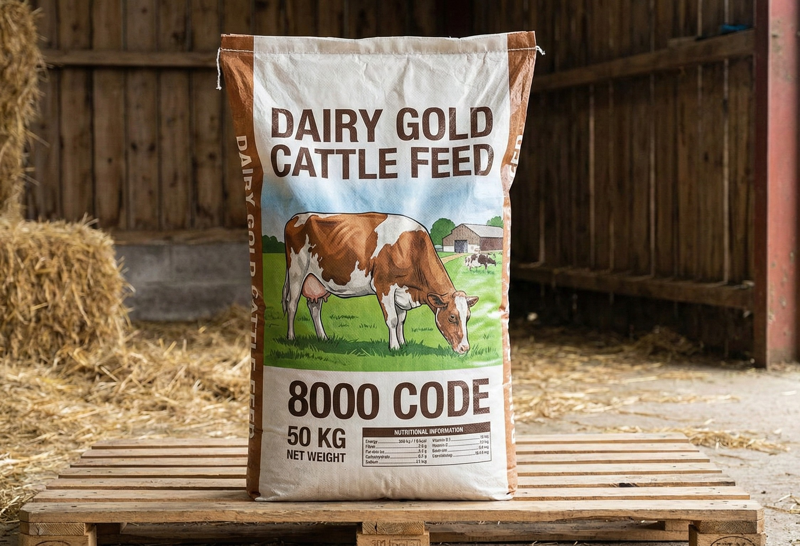

Cattle Feed Bags Manufacturer in Morbi, Gujarat

Mega Polybag manufactures high-strength
Cattle Feed Packaging Bags designed to safely store
and transport animal feed. Our bags ensure durability, moisture
resistance, and easy handling for feed manufacturers and farmers.
Importance of Cattle Feed Packaging
Cattle feed requires strong and reliable packaging to prevent
spoilage, moisture damage, and tearing during transport and storage.
- ✔ Protects feed from moisture and contamination
- ✔ Prevents tearing during handling
- ✔ Maintains feed quality and nutrition
- ✔ Easy stacking and transportation
- ✔ Long shelf life
Material & Specifications
- Material: PP Woven / BOPP Laminated
- Optional inner liner for moisture protection
- Available sizes: 10kg, 25kg, 40kg, 50kg
- Strong stitching and reinforced edges
- High-quality multi-color printing
Applications
- ✔ Cattle Feed
- ✔ Poultry Feed
- ✔ Animal Nutrition Products
- ✔ Dairy Farm Feed
- ✔ Livestock Feed Manufacturers
Why Choose Mega Polybag?
- ✔ Manufacturer based in Morbi, Gujarat
- ✔ Strict quality control process
- ✔ Strong & tear-resistant bags
- ✔ Competitive factory pricing
- ✔ Timely bulk order delivery
Frequently Asked Questions
Are cattle feed bags moisture resistant?
Yes, we offer optional liners to protect feed from moisture.
Can you print brand name and feed details?
Yes, full customization including logo, color, and size is available.
What is the standard weight capacity?
Our cattle feed bags are available from 10kg to 50kg capacity.